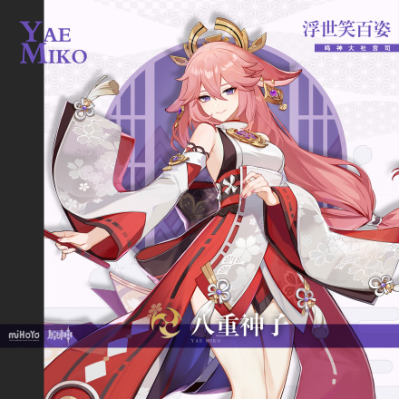
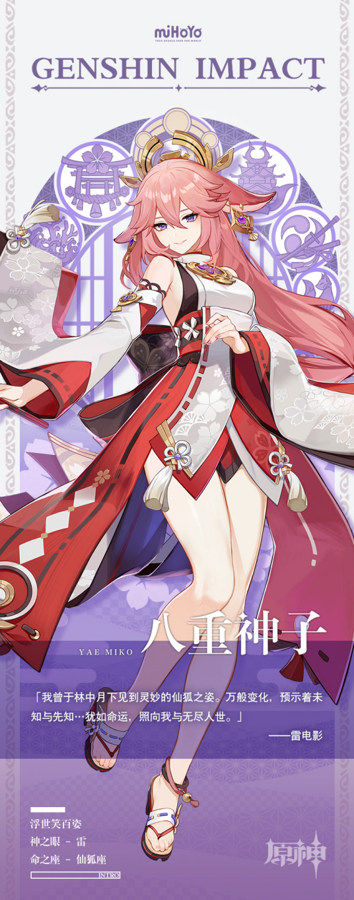

八重神子
(五星雷系角色) 八重神子，米哈游出品的游戏《原神》及其衍生作品中的角色，掌管鸣神大社的大巫女、狐之血脉的延续者、“永恒”的眷属与友人，以及，轻小说出版社“八重堂”的恐怖总编。有着多重身份的神秘宫司，凡人或许永远无法了解她的真面目与真心。
角色背景
稻妻鸣神大社的宫司大人，掌管神社的一切事宜。兼任轻小说出版社“八重堂”总编。永恒之神的眷属，也是与其关系最为密切的好友。
细究起来，八重神子的头衔竟与她的性情同样难测多变。出于各种目的试图搞清神子“真面目”的人，可以从天领奉行府一路排到“八重堂”门口，然而迄今为止，成功者依旧寥寥。
——只需记得，她永远是那位“兼具智慧与美貌的八重神子大人”就好。
角色故事其一八重堂的几位编辑曾向总编大人推荐过一份原稿。 该作品文笔瑰丽，构思精巧，选题也恰是时下流行的恋爱轻喜剧。 如此璞玉，只需稍加打磨，配上精致插画…一定能大卖特卖吧！ 编辑们没想到的是，八重神子看过后并未露出欣喜之色，而是深深叹气，将各大责编都叫了过来。 责编犹豫地问：「八重大人…虽说是我建议他写这个题材的…可这不是现在最热门的类型吗？」 面对责编疑惑的眼神，神子直接说出了自己的意见：一本本该新奇却被题材处处束缚了的轻小说，一言以蔽之，「不够自由」。 所谓的畅销题材、类型化作品…不过是每十年轮换一次的潮流罢了。 投时代所好是种捷径，但如果一部作品本就有不被时潮淹没的素质，又何必随波逐流？ 「替我传话给这位新人作者，就说无需顾虑题材类型，只要认真对待笔下的『故事』就好。」 投稿作者听闻此事，若有所悟，便停笔闭门苦思。数月后，一份崭新的原稿送到了神子与责编面前。 责编一时哑然，就连向来百无禁忌的八重神子也难得微蹙起了眉头： 「嗯…怎么办呢…确实不太妙。」 「是啊！就算再怎么不用顾虑题材，『转生成为雷电将军』也太离谱了吧！」 「题材？题材当然没有问题了。但是——他的笔名太普通，怎么看都配不上这本书吧。」 「关注点原来在这里吗…不、不过您开心就好。」 不久后，本书作者便以总编提议的超长笔名「勘解由小路健三郎」堂堂出道。 至于总编大人灵机一动开展「转生成为八重宫司」的征文活动，又是后话了。
角色故事其二身为宫司最大的不便之处，在于每次神社祭典都必须盛装出席，坐守社殿。 夜幕中烟花璀璨绽放，神社内外人声鼎沸，如此大会，自己却要全程带着庄重的笑容端坐在神社内… 这种灾难，比油豆腐从世上彻底消失还要可怕。 雷神的眷属寿命较长，转眼便是百年。漫长岁月里，无聊才是最难抵御的敌人。 如果哪天连自己也习惯了枯坐终日，顽固如朽木，世间岂不是少了一个善于发现乐趣与机会的聪明人？ 所以，隔三岔五为自己寻些乐子，绝对是极为合理又有必要的事。 哪怕为此小小利用一下宫司的职权，也是无可厚非的吧！ 祭典当夜，看着面前社奉行特意送来的长野原特制烟花，八重宫司满意地点头。 那晚的祭典仪式一如既往，礼制周全，规行矩步。 「宫司大人」彻夜正襟危坐的端丽身影，令无数巫女心生敬仰。 她静静坐在流星般美丽的光之雨下，观察着祭典上往来的人们。 被烟花响声掩盖住的，是一句从嚼着苹果糖的牙缝中挤出来的低语。 「要我当宫司的时候，你可从没说过以后祭典只能溜出来看啊。」
角色故事其三追求趣味，寻找快乐，是神子的日常原则。 对爱研究人类的她而言，「立场」与「德行」之类的评判指标，都要远远排在「有趣」后面。 无论是信仰有别的大巫女，还是阵营敌对的大将，都能成为神子青眼相加的对象。 …虽然，这份欣赏有时也会化作一些无伤大雅的麻烦。 比起兢兢业业的下属和葵藿倾阳的晚辈，神子在神社中最感兴趣的，是一位名叫鹿野奈奈的巫女。 神子的小说同好——鹿野奈奈，每天都为照顾好早柚苦恼万分。 神子躺在屋内，时而看见早柚从窗口一闪而过，不用多久，鹿野奈奈匆忙又愤怒的脚步声就会跟着到来。 这种关系就像闪电和雷雨，令神子倍感趣味，偶尔还会特意指条错路，让热闹的场面多持续一会儿。 更有一次，早柚特意为神子帮自己争取午睡时间向她致谢，并告诉神子，午后的阳光最为惬意。 或许是受此鼓舞，不久后一个阳光大好的日子，神子摇身一变，化形为普通稻妻女子下山过了一整天。 町街的「秋沙钱汤」、花见坂的「木南料亭」、街边的「小仓屋」…每一家都未错过，每一次体验都让她高兴。 到了傍晚，更是去「万端珊瑚侦探社」委托了一起路上听说的小动物失踪案。 「哎呀呀，您是没见过，那些失主呜呜哭得好可怜哪。两位侦探还请想想办法，帮帮他们吧！」 做完这些，女子走在街上，忍不住愉快地微笑起来。 以这种身份参与到稻妻的日常生活中，实在是一件乐事。 如果擦肩而过的九条裟罗面上能不露出怀疑之色，就更好了。 只是有些对不起「秋沙钱汤」的老板。异国风情的温泉虽好，泡完却不小心掉了些狐狸毛。
角色故事其四很久很久以前，人类在讲起妖怪们的故事时，还不需要用「很久很久以前」来作前缀。 天狗横越长空，鬼众驰骋沙场；狸妖见于阡陌，狐仙行走人间。 在鸣神的大纛（[dào]:古代军队里的大旗）之下，妖众以不思议的力量，助人类度过刀耕火种，筚路蓝缕的时期。 依山作险，傍海筑城，至此稻妻始成。 妖中尤以「白辰狐王一脉」最为尊贵，代有大妖出世，在人间留下无数逸话。 众妖偶尔聚坐对饮之时，也少不了各自吹嘘，最近自己又成就了一段新的传说。 酒后所言，难免与真相有出入，却也无妖计较，只求个有趣好听。久而久之，即成「百物语大会」。 其时常见有乐斋举杯高谈，引得众妖无不侧耳神往，连设宴的狐斋宫也不禁阖眸微笑。 尚是幼狐身形的神子，却总是攀在狐斋宫肩头，不依不饶地挑拣着有乐斋故事中的漏洞。 有乐斋毕竟是冰雪聪明的雅士，一捻胡子便圆好了说辞。 不过神子也总能抓出新的纰漏，如此往复，直到斋宫大人笑着劝二位打住：听众们都急着要听下一段了。 酒过三巡，故事也讲过数轮，席间已醉得无妖能组织出完整的章句。 众妖便干脆免了言语争锋，各使妖力腾空而起，看谁能遮天蔽月，拔得头筹。 ——是为「无月之夜，百鬼夜行」。 尔来五百岁，当年的小狐狸也已修成通天彻地的大妖。 昔年曾与之共饮的妖众，则匿迹于战争与历史之中，存世的血脉也日渐稀薄。 从此「百鬼夜行」，终于成了「很久很久以前」的传说。
角色故事其五稻妻刀剑自古闻名天下，「雷电五传」的杰作更是国之重器。 然而，仅过去短短数年，五支传承竟已折损大半。 汹涌暗流牵扯了无数权贵，涉事世家大族均遭到问责贬谪。 就连执掌社奉行的神里家，也因督导下属不力而备受牵连。 将军降下最终裁决之前，久未涉足政事的宫司大人突然向将军进言，赶在风雨飘摇之际保下了神里家。 由此，神里家虽元气大伤，却终是免去罢黜之虞。 随后数年，外界对宫司此举多有猜测： 一说社奉行与鸣神大社关系密切，此行是为了在扶植忠诚于自身的代言者。 ——然而，鸣神大社本就自成一派，更未见宫司平日有意涉政。帮助社奉行，收益小于付出，未必是明智之举。 一说宫司怀疑事有蹊跷，如今受牵连者甚广，社奉行若再生变故，恐令稻妻大局不稳。 ——此话乍看有理，细想却站不住脚。需知，豪门起落只是人间再平常不过的戏码。即便神里失势，社奉行也会有新当家。 又有一说，神子在风波初定之后，曾与当时的神里家家主进行过密谈。 ——但年迈重伤的神里家主已如风中残烛，又有什么能力左右大局？ 至此，坊间种种猜测均无结果。神子所想所为，皆没有答案。 人们不知道的是，神子当日给出的嘱咐，如同家族规章一般留在了神里府中。 「神里家能从此次事件中幸存，还是将军宽容。从今往后，切莫忘了将军的恩典。」 这句话成为了因缘之种，预示着社奉行未来的位置。 他日，若风暴降临稻妻，即便与另两家奉行针锋相对，社奉行神里家也要牢记恩惠，恪守「将军」的永恒之道。 棋盘上，宫司走出了无憾的一着。
「镇火事会」「镇火事会」曾是由天领奉行牵头，鸣神大社操持的例行法事，旨在祈求福荫庇佑，来年不受火事侵扰。 其时稻妻屋舍多为木制建筑，用火稍有不慎就易酿成大祸。 天领奉行奉将军之命，成立火消队负责扑救，又请鸣神大社行「镇火事会」安抚受惊的民众。 此后百年，消防安全渐入人心，重大火事不再频发，但一年一度的「镇火事会」却留了下来。 会上巫女娉婷起舞，民众慷慨解囊…募得的捐款再由天领奉行和神社四六分账。 八重神子起意筹办「八重堂」时苦于经费不足，将神社现有的法事一一盘算过之后，就盯上了「镇火事会」这项古老传统。 「明明只有鸣神大社忙前忙后，为什么要让天领奉行也来分一杯羹？ 再说了，筹来的钱都进了九条老头的腰包，火消队也从没发过年终奖啊。」 于是一番运作之下，今年的「镇火事会」改弦更张，娱神祝祷的形式不再是巫女献舞，转而换成了轰轰烈烈的轻小说征文大赛。 负责运营赛事、出版作品的专营机构「八重堂」，也顺理成章地借「镇火事会」的经费开张大吉。 至于出版收入，自然全进了神社的口袋。 「如今火事不再频发，募款却年年有增无减，此举也是为避免劳民伤财，有损民生。 何况寻本溯源，诗文书画本就是一种娱神方式——难不成你们觉得，自己比我更懂祭礼之事？」 面对突然找上门来的九条孝行，八重神子如是正色道。 无可奈何的天领奉行大人只得带着下属，面色阴沉地走下影向山。 一行人所不知道的是，就在他们前脚迈出神社的下一秒，身后那位一脸正色的神子大人，就从奉纳箱下掏出了一本批注到一半的小说原稿。
神之眼「那是一场惊天动地的斗法，敌人划开海潮，踏空而来，连天地都为之色变！ 宫司大人手持御币，庄严肃穆，缓步踏上影向山巅。 众巫女随侍在侧，口宣密咒，霎时间重云蔽日，雷声沉响！」 「……」 「大战旷日持久，纵是宫司也有些恍惚。敌人趁此不备，一记重击袭来！ 就在这时，一道雷光如天陨流星，直坠宫司面前——竟是一枚闪闪发光的神之眼！ 宫司大人一把抓住，抖擞精神大显神威…」 「停停停！你这说的全都是假的吧？」 「哦？那要不换一个，那天我在花见坂来了一场酣畅淋漓的『拉面对决』…」 「怎么会有人因为吃拉面拿到神之眼啊？！」 「不也挺有趣的么？毕竟你们想听的，无非就是这样那样的『故事』吧？」 面对旅者的好奇，八重神子露出促狭而莫测的微笑。 「何况就算我如实相告：『我的神之眼只是件装装样子的首饰』你会信吗，小家伙？」
能力设定(部分)
天赋| 名称 | 描述 |
|---|---|
|
普通攻击·狐灵食罪式
|
普通攻击 驱役狐灵，进行至多三段的攻击，造成雷元素伤害。 重击 消耗一定体力，短暂咏唱后，造成雷元素范围伤害。 下落攻击 凝聚雷霆的力量，从空中下坠冲击地面，攻击下落路径上的敌人，并在落地时造成雷元素范围伤害。 |
|
风野干役咒·杀生樱
|
种类：元素战技 对八重而言，驱役精怪就能解决的麻烦，自然是无须亲力亲为的。 迅速移动,并留下一株「杀生樱」。 杀生樱 具有如下特性： ·间歇性对周围的一名敌人降下落雷，造成雷元素伤害； ·附近存在其他的杀生樱时，将提升其位阶，提高上述攻击造成的伤害。 拥有3次可使用次数。 最多同时存在3株杀生樱，杀生樱创造时的初始阶位为壹阶，阶级初始至多提升至叁阶。 若创造的位置与已有的杀生樱距离过近，则会摧毁已有的杀生樱。 「封在枝条里的狐灵都是堕为害人妖鬼的野干。野干天然要低我们天狐两等，使唤起来心安理得。不过我们狐狸分三六九等，你们人类可不要这样哦。至于你问狐狸和人谁比较高级，哼哼…」 |
|
大密法·天狐显真
|
种类：元素爆发 稻妻民话中有「狐凭」一说。其中比较特殊的「天狐之凭」会以雷霆的形式降临在鸣神大社的敌人身上。降下雷电，造成雷元素范围伤害。施放时，八重神子会解放附近的杀生樱，摧毁它们的形姿，化作天狐霆雷降下，造成雷元素范围伤害。每通过这种方式摧毁一株杀生樱，就能降下一道天狐霆雷。 八重仅在此时需要露出天狐之凭证，号令雷霆。而看过宫司大人露出尾巴的家伙，都已经灰都不剩了。因此，谨记于心——八重大人是没有尾巴的。 |
|
降神篱之御荫
|
种类：固有天赋 施放大密法·天狐显真时，每摧毁一株杀生樱，就会重置一次野干役咒·杀生樱的冷却时间。 |
|
启蜇之祝词
|
种类：固有天赋 八重神子的每点元素精通，能使杀生樱造成的伤害提升0.15%。 |
|
野狐说禅
|
种类：固有天赋 合成角色天赋素材时，有25%概率额外产生一份地区相同的其他随机天赋素材，等阶与合成所消耗的素材相同。 |